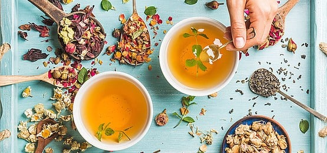

GIAO HÀNG
GIAO HÀNG TƯ VẤN
TƯ VẤNChuyên cung cấp các thực phẩm ,thảo mộc quý hiếm cao cấp , đẹp , độc , lạ . Hàng Tây Tạng, Đông Tạng, Mông Cổ, Nepal... như trà đen, trà trắng, thiết quan âm, trà Đại Hồng Bào, phổ nhĩ, trà hoa, nấm rừng, tùng nhung, bụng dê, tuyết yến , bồ mễ, sen khô ngọc vân, táo đỏ tân cương, đường nâu Vân Nam, bánh sữa Mông Cổ.
Trà thảo dược được làm bằng cách dùng hoa, lá, hạt, rễ, thân, và cánh hoa của vô số cây và hoa. Các loại trà thảo dược có hàng trăm loại giống khác nhau, một số phổ biến và những loại khác ít mơ hồ hơn, và tùy thuộc vào khu vực của bạn trên thế giới, các loại khác nhau sẽ có sẵn rộng rãi hơn. Những lợi ích sức khỏe của mỗi loại trà thảo dược phụ thuộc vào thành phần, có thể là một thành phần đơn lẻ hoặc kết hợp các loại thảo mộc và hoa khác nhau . Một tên khác cho trà thảo mộc là "tisane", mặc dù điều này ít được sử dụng phổ biến hơn.
Uống trà thảo dược rất được khuyến khích cho những người muốn tự nhiên cải thiện sức khỏe của họ trong khi thưởng thức một loại bia ngon và tươi mới. Không giống như cà phê và trà tiêu chuẩn (đen, trắng, xanh lá cây, vv), hầu hết các loại trà thảo dược không bao gồm caffeine. Hầu hết các loại trà thảo dược cung cấp một số loại chất chống oxy hóa, vitamin , khoáng chất , và chất dinh dưỡng khác, nhưng các chi tiết cụ phụ thuộc vào các loại thảo mộc nói riêng và thực vật mà bạn chọn. Các lợi ích sức khỏe thông thường bao gồm thư giãn cơ thể và tâm trí, hỗ trợ giấc ngủ rối loạn, giảm viêm, giảm đau, bảo vệ chống lại các bệnh thông thường, tăng cường hệ thống miễn dịch, tối ưu hóa hệ tiêu hóa, giải độc cơ thể, và kích thích chức năng nhận thức.
Thuốc lợi tiểu và thuốc nhuận tràng giúp loại bỏ độc tố nhanh chóng khỏi cơ thể, giảm stress trên hệ tiêu hóa , thận và gan. Các loại trà lợi tiểu tốt nhất bao gồm bồ công anh , dâm bụt, màu xanh lá cây, sơn tra và trà cẩm chướng.
Kích thích hệ thống miễn dịch , với chất chống oxy hóa và vitamin, giúp ngăn ngừa nhiễm trùng, bảo vệ chống lại stress oxy hóa, và giảm nguy cơ mắc bệnh mãn tính. Các loại trà thảo dược tăng cường miễn dịch tuyệt vời bao gồm các loại trà gốc cam, chanh, quất , gừng và cam thảo .
Một số loại trà có thể cân bằng mức độ dẫn truyền thần kinh , giảm sự lo lắng và tăng cường giấc ngủ thông qua các tác dụng an thần. Các lựa chọn tốt nhất cho các vấn đề về giấc ngủ bao gồm hoa chi bản, nụ tam thất , hoa cúc và hoa oải hương.
Giảm đau là rất quan trọng cho những người bị khó chịu mãn tính, hoặc những người bị bệnh, phẫu thuật hoặc chấn thương. Các loại trà thảo dược giảm đau hàng đầu bao gồm trà cam bergamot, hoa cúc, cam thảo.

Giảm viêm có thể giúp mọi thứ từ đau dạ dày và viêm khớp đến nhức đầu và trĩ. Các loại trà thảo dược như trà bạc hà, gừng, cam thảo rất tốt cho các vấn đề về viêm.
Căng thẳng và lo âu nhẹ nhàng cũng có thể giúp giảm mức độ trầm cảm , tăng cường năng lượng và giảm tỷ lệ mắc bệnh viêm và bệnh mãn tính trong cơ thể. Uống bạc hà và trà hoa cúc để giảm mức độ căng thẳng.
Khả năng chống oxy hóa có thể giúp loại bỏ các gốc tự do và ngăn ngừa stress oxy hóa trong cơ thể, làm giảm nguy cơ ung thư và bệnh mãn tính. Trà thảo dược có nhiều chất chống oxy hóa bao gồm trà bạc hà, rooibos, húng tây và cây tầm ma .
Khó tiêu, chuột rút, đầy hơi, buồn nôn, nôn, táo bón và tiêu chảy có thể được loại bỏ bằng các loại trà thảo dược, đặc biệt là các loại giống như bồ công anh, hoa cúc, quế, bạc hà và trà gừng.
Ngăn chặn sự căng thẳng oxy hóa trong não, đồng thời tăng cường tập trung và tập trung , có thể đạt được bằng cách thêm các loại trà hoa hồng, gừng, bạc hà và bồ công anh vào chế độ ăn uống lành mạnh của bạn.
Có hơn một trăm loại trà thảo dược được tìm thấy và sử dụng phổ biến, nhưng một số loại phổ biến nhất, cùng với một số lợi ích đáng chú ý nhất của chúng, được liệt kê dưới đây.
Phần lớn các loại trà thảo dược có thể được thực hiện bằng cách ngâm lá, rễ, hạt, hoa, cánh hoa hoặc thân của các loại thảo mộc và thực vật khác nhau trong nước nóng. Điều này giải phóng các chất dinh dưỡng và các thành phần hoạt động để truyền nước, dẫn đến một thức uống hương vị và dinh dưỡng. Đối với những người đam mê trà thảo dược tiên tiến, kết hợp các thành phần khác nhau có thể mang lại nhiều lợi ích cho sức khỏe hơn.
Hầu hết các loại trà thảo dược phức tạp bao gồm ba phần - thành phần hoạt chất, thành phần hỗ trợ và chất xúc tác. Các thành phần hoạt tính nên là một trong những cung cấp các lợi ích sức khỏe quan trọng nhất cho bạn, chẳng hạn như sức khỏe miễn dịch hoặc giảm đau. Các thành phần hỗ trợ cũng nên ảnh hưởng đến một hệ thống cơ quan tương tự hoặc khu vực của cơ thể, có lẽ trong một thời trang chống viêm, an thần hoặc kích thích. Các thành phần chất xúc tác cung cấp hương vị hoặc vị ngọt mà bạn muốn đi đầu trong nước giải khát để làm cho nó ngon miệng.
Xét về số lượng, hầu hết các chuyên gia đề nghị pha trộn 3 phần hoạt chất, 2 phần thành phần hỗ trợ và 1 phần chất xúc tác. Điều này tạo ra một loại bia cân bằng có vị ngon và mang lại kết quả tốt cho sức khỏe.
Thành phần trà thảo dược
Trà thảo dược là đồ uống đơn giản và thường bao gồm các bộ phận của cây từ 1 hoặc nhiều loại thảo mộc, hoa hoặc cây thúc đẩy sức khỏe, cũng như chất làm ngọt tự nhiên, nếu muốn, chẳng hạn như mật ong hữu cơ , stevia , đường nâu hoặc quế.
Về mặt dinh dưỡng , mỗi loại trà thảo dược có một loạt các chất chống oxy hóa, hợp chất hữu cơ, khoáng chất và vitamin, bao gồm catechin, hợp chất polyphenolic, triterpenoids , phytochemical , axit amin, axit dễ bay hơi, alkaloids và flavonoid, cũng như vitamin A, C, B, E và K, kali , canxi , sắt, kẽm , mangan , magie và phốt pho.
Tác dụng phụ của Herbal Teas
Trà thảo dược đi kèm với một số tác dụng phụ, do tác dụng mạnh của các thành phần hoạt tính, phản ứng dị ứng tiềm ẩn, nhận dạng sai lầm của các loại thảo mộc, tiêu thụ quá nhiều hoặc tương tác thuốc..